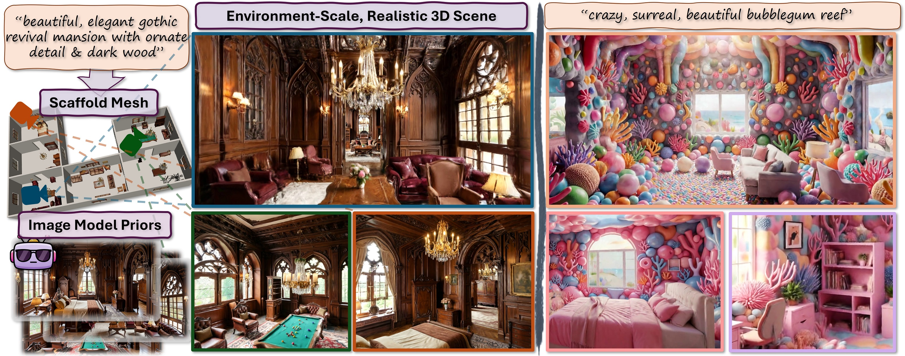
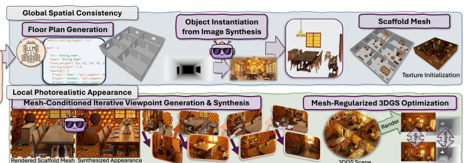
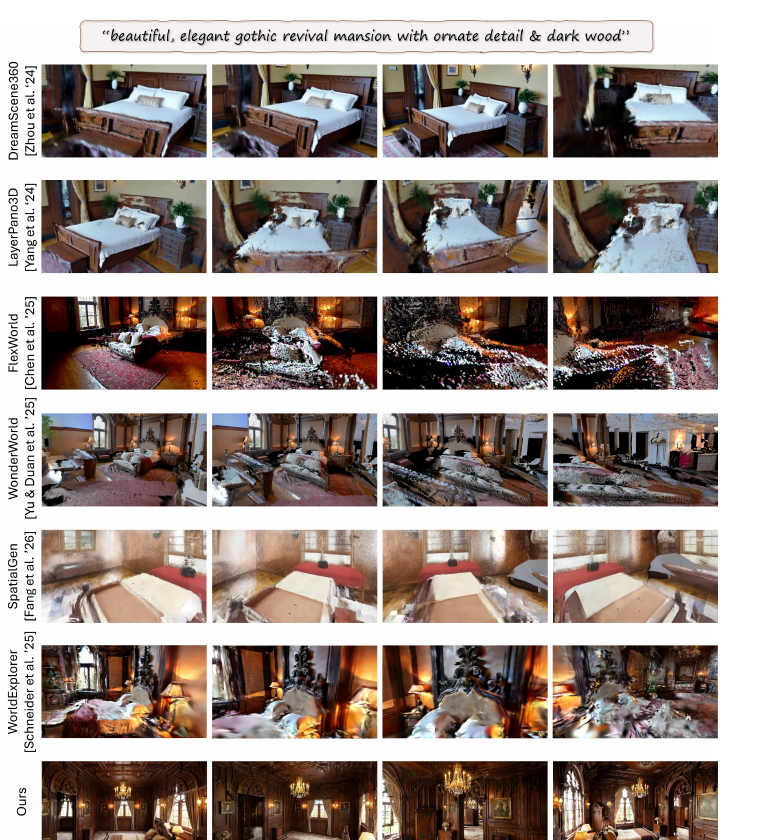
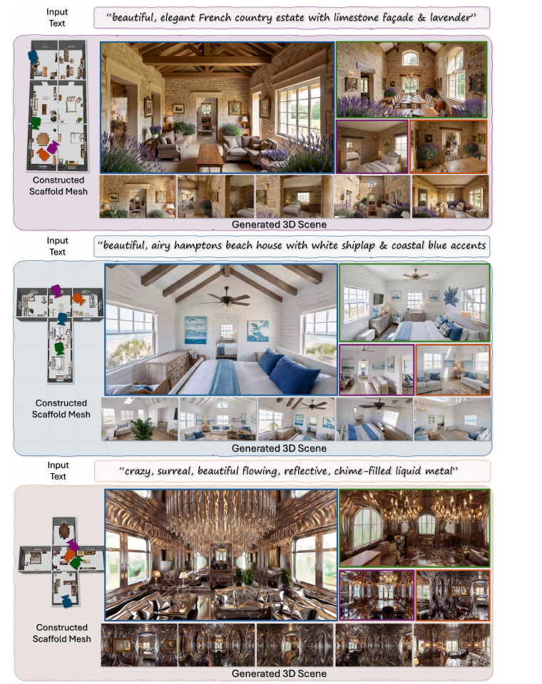
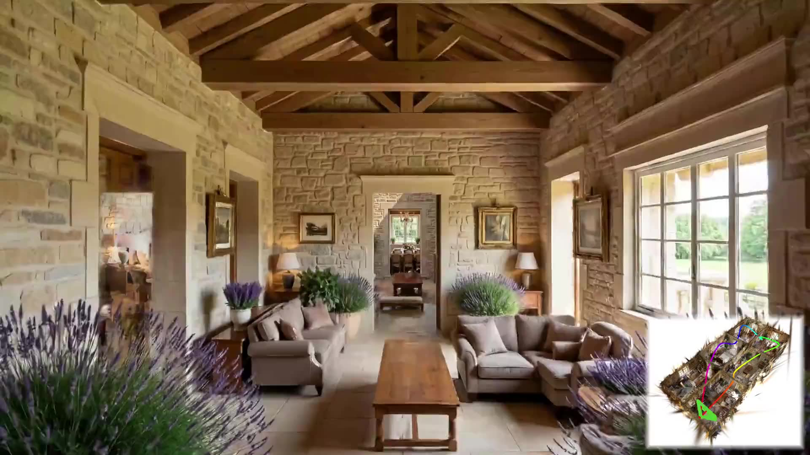
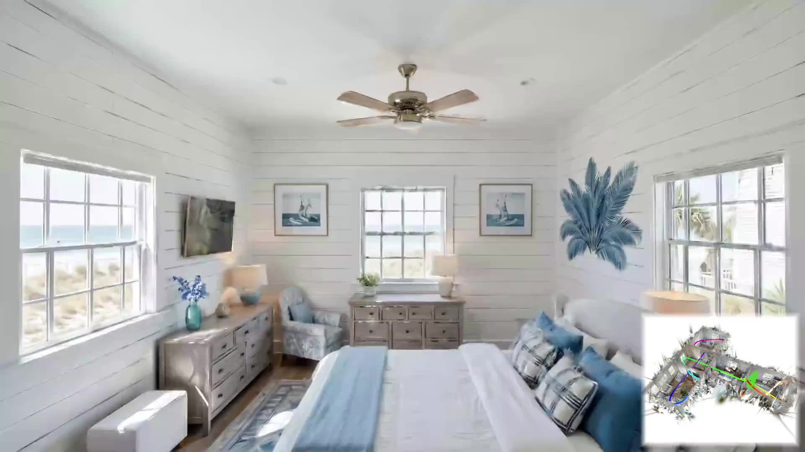
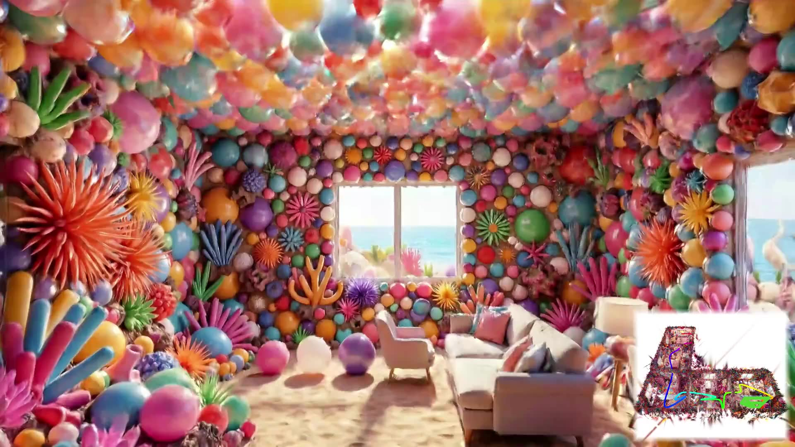
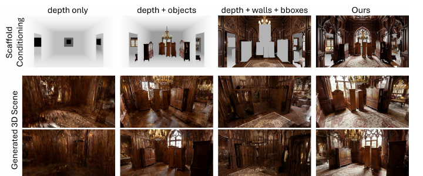
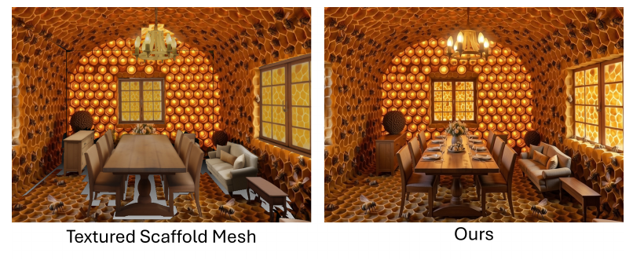
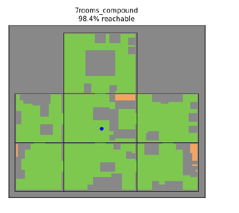

Paper Analyzer / Academic Reading Note
WorldMesh：用网格条件扩散生成可导航的多房间 3D 世界
对 WorldMesh: Generating Navigable Multi-Room 3D Scenes via Mesh-Conditioned Image Diffusion 的完整方法、源码与实验解读。重点回答一个问题：为什么把几何先写进显式 mesh，能让图像扩散模型从“漂亮的一张图”走向“可以走进去的多房间世界”？

先给结论
- 问题：纯像素空间的图像/视频扩散在跨房间、近距离绕物体观察时容易出现漂移、重影和布局断裂。
- 方法：先由文本生成经过规则校验的 floor plan，再构建含墙、地板、开口和物体的 mesh scaffold；随后用 mesh 的深度、物体几何和累积墙面纹理条件化图像扩散。
- 闭环：每个新视角生成后把颜色投影回 mesh，下一视角继承这份外观；通过深度边缘验证拒绝结构不符的样本，最后用 mesh 深度正则化 3DGS。
- 结果：31 人感知实验中，WorldMesh 的 Quality / 3D Objects / 3D Structure 分别为 4.48 / 4.40 / 4.35，平均 pairwise preference 为 96.2%。
- 边界：目前只处理单层平面，物体重建依赖 SAM-3D-Objects，复现还需要多个大模型权重、24 GB 显存和可选的付费 API。
1. 研究问题：图像很漂亮，世界却不连续
从文本生成一张室内图像已经相当成熟，但“从文本生成一栋可以导航的房子”是另一类问题。单张图只需要在一个视野里自洽；可导航场景必须在相机移动后仍然回答同一组问题：这面墙是否还在原来的位置？床的背面是否真的存在？穿过门以后，上一间房的窗户和下一间房的走廊是否接得上？这些问题都要求跨视角共享一个持久的三维状态。
论文把现有方法的瓶颈归结为缺少显式几何。文本到图像和文本到视频模型在局部纹理上很强，却主要在像素或潜空间里工作；当相机靠近物体、围绕物体旋转，或者沿长轨迹跨越房间时，模型只能从有限的上下文猜测不可见区域。猜测一旦发生在每一帧，误差就会像连续拼接的地图一样逐步积累。
这也是为什么论文不把目标定义成“生成一张更高分辨率的全景图”。全景方法可以把中心视角做得很逼真，却无法保证从中心离开后仍然有正确的遮挡、视差和物体背面。视频扩散利用时间连续性改善了轨迹内的一致性，但长距离、多房间的状态仍然很难保持。
WorldMesh 的出发点是把任务拆成两个互相牵制、但不应混为一谈的部分：全局空间一致性交给显式 mesh，局部真实外观交给强大的图像生成模型。几何先规定“哪里有墙、哪里有门、物体占据哪一块空间”，扩散模型再在这个约束内补足材质、光照和细节。
论文原文的关键表述是：“we decouple this complex problem of large-scale 3D scene synthesis into its structural composition ... and realistic appearance synthesis.” 这不是把一个模型拆成两个网络，而是把“结构真值”和“外观先验”拆成两种可以相互读写的表示。
与相关路线的差异
| 路线 | 主要优势 | 跨视角 / 跨房间风险 | WorldMesh 的处理 |
|---|---|---|---|
| 迭代 T2I lifting | 可以快速扩展局部画面 | 单目深度误差沿轨迹累积 | 用同一 mesh 深度作为持久锚点 |
| 多视图扩散 | 联合推理多个相机 | 通常面向单物体或有限场景 | 把相机集合放到任意房间布局上 |
| 视频扩散 | 时间上的运动连续 | 计算昂贵，长轨迹漂移 | 逐视角生成，状态写回 mesh |
| 全景到 3D | 中心视角外观细腻 | 边缘视差与遮挡不可靠 | 以真实几何而非球面纹理作为基础 |
| WorldMesh | 结构与外观分工 | 把一致性约束前置 | mesh + 纹理累积 + 深度正则 3DGS |
2. 总览：一条可以反复回写状态的生成链

输入是自然语言主题 $T$，输出是由 3D Gaussian Splatting 表示的场景 $S$。中间的 mesh $M$ 不是临时的可视化，它同时承担三种职责：编码房间连接关系，提供每个相机的深度/颜色条件，以及为最终 3DGS 提供初始化点云和深度监督。
flowchart TB
T["Text prompt"] --> L["Floor plan JSON"]
L --> M["Structural mesh scaffold"]
M --> O["SAM3 masks + object reconstruction"]
O --> C["Depth + objects + wall texture"]
C --> P["Iterative image diffusion"]
P --> V["Depth edge validation"]
V --> G["Geometry regularized 3DGS"]
G --> S["Navigable multi-room scene"]
P -->|"project colors back"| M
这条链最有价值的地方是最后一条回边。普通的 render-refine-repeat 流程把上一张图当作下一张图的主要记忆；WorldMesh 让生成结果先进入一个有坐标、有表面、有遮挡关系的 mesh，再从 mesh 渲染下一次条件。记忆从“像素序列”变成了“可查询的空间状态”。
论文 Figure 1 将这种分工画成了两个尺度：局部尺度是围绕床、桌子等物体移动时的几何一致性；全局尺度是穿过门、跨越房间时的布局一致性。二者共享的并不是同一张参考图片，而是同一套 mesh 拓扑和相机位姿。
3. 方法详解
3.1 从文本生成可验证的 floor plan
论文先让 Claude Opus 4.6 从主题 $T$ 生成 JSON 格式的布局 $L$。JSON 不只包含房间名称，还包含墙厚、层高、每个房间的 floor polygon，以及门和窗的 opening 定义。作者不是生成一次就接受，而是按空间规则反复采样：房间不能重叠，邻接房间必须共享完整墙边，门要连接房间，窗不能出现在房间内部共享墙上。
这一步把语言模型容易犯的“看起来合理、几何上不可能”的错误限制在一个可检查的接口内。源码中的 scene_constraints.py 只依赖坐标和图结构，不触碰渲染后端；它会检查四边形、轴对齐、逆时针方向、楼层高度、共享墙和连通性。布局只有通过 assert_valid 才会进入 mesh 构造阶段。
空间图约束对后续导航很关键。若房间只是视觉上相邻，却没有完整共享墙和门，3DGS 可能仍然生成一组漂亮的局部房间，但相机无法得到一条真实的可走路径。论文在附录 Figure A5 中把最终场景栅格化为 0.15 m occupancy grid，并报告最大 4-连通自由空间平均覆盖 96.7%。这项指标并非外观分数，而是对“世界是否真的连起来”的直接检查。
3.2 把 floor plan 变成结构 mesh
对每个房间，作者将 floor polygon 的边向内 inset，再沿竖直方向挤出到 ceiling height。两个房间共享一面墙时，各自只生成半厚度，从而避免重复的双厚墙。门窗通过 boolean subtraction 切开；共享边上的 opening 会传播到相邻房间，确保从两侧看到的是同一个洞口。
这一处理带来一个容易被忽略的好处：结构 mesh 的拓扑比图像内容更稳定。墙面、地板、天花板和开口是可索引的几何对象，后续投影纹理时可以按房间过滤，避免把一个房间的颜色泄漏到另一个房间。源码还保留了诸如 room_0_wall_2、room_0_floor 的几何名，为调试和消融实验提供了清晰边界。
相机覆盖也在此阶段确定并在整个流程中复用。每个房间先放置两个位于短墙中点、相对而立的 bootstrap 相机；再沿房间周边生成约 16 个 eye-level 相机，并添加 8 个较高的 overhead 相机。这样，初始两视角可以覆盖四面墙，后续相机则在已有外观的边界上逐步扩张。
人话解释：把世界顶点变换到相机坐标系后，用针孔模型找到像素位置，再翻转 $v$ 以符合 glTF 的纹理坐标约定。后文的墙面纹理累积就是沿着这条投影路径发生的。
3.3 用图像先验实例化物体
仅由 LLM 写出的家具清单会很规整，却缺少真实室内的组合关系、杂物和风格。WorldMesh 先把结构 mesh 从一个 coverage camera 渲染成深度图，使用 Flux2-Klein 生成一张带有房间类型、全局主题和建筑上下文的初始图像 $I^{obj}_0$。建筑上下文很重要：如果提示里不说明“这是门洞或窗”，模型可能把深度图中的开口解释成电视或装饰画。
随后用 SAM3 从这张图中得到单个物体 mask，再让 SAM-3D-Objects 根据每个 mask 重建带纹理的对象 mesh 和相对于相机的变换。论文允许交互式点提示；代码仓库还提供了由视觉语言模型生成文本提示、驱动 SAM3 文本模式的替代路径。重建后，物体从相机坐标转换到世界坐标，并按标签和长宽高比分成落地、平面、墙挂和吊顶类别。
物理合理性不是由扩散模型“顺便保证”的。落地物体会通过 oriented bounding box 对齐重力方向，再投影到最近的支撑面；互相重叠的物体会向附近墙面平移，墙挂和吊灯则使用对应高度规则。这些启发式让对象几何成为可复用的锚点，而不是每个视角都重新幻觉一遍的彩色块。
3.4 墙面纹理不是一次性贴图，而是逐视角积累
对象的几何和纹理在 scaffold 创建时就存在，但墙面不能简单地预先贴一张图。论文选择把每次成功生成的图像投影回 $M_{geo}$ 的可见墙面：bootstrap 视角覆盖四面墙的大部分区域，后续视角不断填补未覆盖区域。下一次条件渲染时，已知颜色以 alpha-blended 方式出现，未知部分仍然保留灰度深度。
论文用一个很短的限定说明这种关系：外观必须 “anchored to the underlying 3D geometry”。这里的 anchor 不是软性的风格提示，而是能从每个相机位姿重新渲染的结构、遮挡与表面坐标。
工程实现比“把 RGB 贴回顶点”更谨慎。源码先按面法向筛掉背向相机的面，再以渲染深度检测物体遮挡；若墙顶点后面的场景深度明显更近，就不把前景物体的像素投到墙上。越出视锥的三角形也会被拆分，避免把边缘像素拉伸成一大片纹理。
# method/project_wall_texture.py:104-139
w2c = np.linalg.inv(camera_c2w)
verts_h = np.hstack([vertices_world, np.ones((len(vertices_world), 1))])
cam_coords = (w2c @ verts_h.T).T[:, :3]
z = -cam_coords[:, 2]
z = np.where(np.abs(z) < 1e-6, 1e-6, z)
px = fx * cam_coords[:, 0] / z + cx
py = fy * (-cam_coords[:, 1]) / z + cy
u = px / width
v = 1.0 - (py / height)
这段代码对应论文中的 projective texturing 描述：它把顶点坐标变成可采样的 UV。论文明确承认该过程会留下接缝和遮挡空洞，所以最终图像扩散仍然负责补齐高频细节。
3.5 Mesh-conditioned iterative viewpoint synthesis
最终外观生成使用一组固定相机位姿。每个新相机 $c_i$ 都会得到一个条件图 $X_i$：物体使用已重建纹理，已有墙面使用累积颜色，其余像素用灰度深度表示。模型同时接收一个此前生成的真实图像作为 style reference，文本主题 $T$ 负责保持整体风格。
参考图并不是按文件名或固定顺序选择，而是按旋转相似度选择。两个单位四元数的相似度定义为：
人话解释：四元数 $q$ 与 $-q$ 表示同一个旋转，取绝对点积可以消除这个双覆盖问题。相似度越高，意味着参考图的视线方向越接近目标视角，风格迁移的跨度越小。
人话解释：先在所有已成功生成的视角中找旋转最接近的参考图 $I_{k(i)}$，再把它与当前 mesh 条件 $X_i$ 和主题 $T$ 一起交给图像模型 $\Phi$。因此参考外观与目标几何来自两个不同输入。
从两个 bootstrap 相机开始，算法每次选择与已生成集合中某个相机最相近的候选，形成一个从已知区域向外扩展的 greedy spiral。它不像随机打乱那样突然跳到另一个房间，也不像只沿一条轨迹那样把覆盖集中在狭窄走廊。对于不同房间，共享的纹理 mesh 还会把已完成房间的墙面外观带进新的条件图。
# method/flux_generation/camera_poses.py:106-125, 163-199
def quaternion_similarity(q1, q2):
q1 = q1 / np.linalg.norm(q1)
q2 = q2 / np.linalg.norm(q2)
return abs(np.dot(q1, q2))
def order_by_rotational_proximity(seed_ids, candidate_ids, poses):
generated = set(seed_ids)
remaining = [c for c in candidate_ids if c not in generated and c in poses]
ordered = []
while remaining:
best_id, best_sim = None, -1.0
for cid in remaining:
for gid in generated:
sim = quaternion_similarity(poses[cid].quaternion,
poses[gid].quaternion)
if sim > best_sim:
best_id, best_sim = cid, sim
ordered.append(best_id); generated.add(best_id); remaining.remove(best_id)
return ordered + remaining
源码把论文中的“rotationally closest”写成了可复用的最近邻排序器。run_full_pipeline.py:2399-2406 还会把 overhead 相机延后，先完成同一高度的连续覆盖。
3.6 生成结果先验检查：只拒绝结构错误，不惩罚合理的新物体
扩散模型即使拿到 mesh 条件，也可能改变墙的方向、移动门洞或让地面消失。WorldMesh 不直接比较 RGB，因为真实图像中新增的椅子、植物和装饰本来就可以不在 scaffold 里。作者用 Depth Pro 从生成图 $I_i$ 估计深度 $D'_i$，再对估计深度和 mesh 渲染深度分别做 Canny 边缘检测，只检查 mesh 中应当存在的结构边缘是否被覆盖。
人话解释：分母是 mesh 认为必须出现的墙、地面和开口边缘；分子统计生成图的深度边缘在 10 像素容差内覆盖了多少。它只惩罚漏掉结构，不会因为模型多生成一盏灯而降低分数。
论文给出 Canny 的归一化 hysteresis 阈值 $0.1,0.3$ 和 $3\times3$ Sobel aperture；不通过就换 seed 重生。这里有一个复现时必须写清的工程细节：仓库的 PipelineConfig 默认开启深度验证（depth_threshold=0.5），而更昂贵的 edge validation 由 use_edge_validation 控制且默认关闭。也就是说，论文概念上的验证环在代码中被拆成了可配置的深度与边缘两条路径。
3.7 Geometry-regularized 3DGS：让漂亮图像不能推翻房屋骨架
通过验证的多视图图像会被送入 3DGS 优化。初始化点云不是随机的：作者把 mesh 深度图反投影到世界坐标，得到一个带结构先验的点集。训练同时拟合颜色、结构相似度和 mesh 深度：
人话解释：前两项让 splat 渲染结果看起来像生成图，最后一项把每个相机看到的深度拉回 mesh。高权重的深度项抑制了稀疏视图下常见的几何漂移；它不会强迫外观变成灰色占位符。
源码 create_splatfacto_colmap.py 还处理了坐标系细节：渲染阶段使用 Z-up，nerfstudio 训练数据转换成 Y-up，并在深度点云超过五百万点时自动下采样。这样的工程步骤不会出现在论文主图里，却决定了“方法能否从公式走到可训练的数据集”。
4. 源码核对：论文模块在仓库里的落点
代码仓库不是一个只放演示脚本的最小复现，而是把完整流水线拆成若干可单独运行的阶段。README 给出了 setup.sh、分阶段恢复和 worldmesh_cli.py 向导；最新浅克隆提交为 ee19422（2026-07-04），并附带 Hugging Face 数据集链接。
| 论文组件 | 源码文件 / 行号 | 可核对的行为 |
|---|---|---|
| 布局约束 | method/scene_constraints.py:128-260 | 矩形、共享墙、门连接和房间连通性检查 |
| 结构 mesh | method/generate_scene.py:551-603 | 半厚共享墙、floor/ceiling、opening cutout |
| 相机覆盖 | method/render_multiview.py:205-454 | 周边、bootstrap、opposite、overhead 相机 |
| 墙面纹理 | method/project_wall_texture.py:271-520 | 投影、法向过滤、遮挡检查、视锥边缘拆分 |
| 条件图 | method/generate_depth_object_conditioning.py:162-250 | 结构深度、前景物体、墙面颜色的合成 |
| 全流程 | method/run_full_pipeline.py:1117-1172 | 阶段 1 到 8、状态保存、GPU 清理和断点恢复 |
第一处方法—源码对应是相机排序。论文公式只给出四元数相似度，仓库在 camera_poses.py 中将其扩展成最近邻序列，并在最终 Flux 阶段实际调用。这说明“渐进式外观传播”不是图示上的叙述，而是决定生成顺序的控制逻辑。
第二处对应是条件图中的对象判定。代码不依赖 SAM3 的 mask 来决定每个像素是否是物体，而是比较完整场景深度和结构深度：如果完整场景在结构前方出现更近深度，就把该像素的 RGB 覆盖到灰度深度上；若墙面纹理存在，再只对非物体结构区域做 alpha blend。
# method/generate_depth_object_conditioning.py:188-248
valid_full = full_depth > 0
valid_struct = structure_depth > 0
object_mask = valid_full & (
(~valid_struct) |
(full_depth < structure_depth - depth_tolerance)
)
depth_rgb = np.stack([depth_vis, depth_vis, depth_vis], axis=2)
composite = depth_rgb.copy()
composite[object_mask] = rgb_image[object_mask]
wall_blend_mask = textured_wall_mask & valid_struct & ~object_mask
composite[wall_blend_mask] = (
wall_texture_alpha * wall_texture_rgb[wall_blend_mask] +
(1 - wall_texture_alpha) * composite[wall_blend_mask]
).astype(np.uint8)
这段实现把“深度 + 物体 + 墙纹理”的三种信号明确分层。它也解释了消融实验中的三个变体：去掉墙纹理、把物体换成 bounding box、或只保留深度。
第三处对应是 3DGS 的流水线边界。run_full_pipeline.py 的阶段 5 重新渲染物体，阶段 6 按相机生成图像并把纹理写回 mesh，阶段 7 导出 splatfacto 的 COLMAP 数据，阶段 8 才进入 nerfstudio 训练。论文把这些步骤压缩在 Figure 2 的一个箭头里；源码则显示它们之间有明确的文件产物和可恢复状态。
5. 实验：一致性收益是否真的来自 mesh？
5.1 设置与评价协议
作者在一张 NVIDIA RTX A5000（24 GB VRAM）上生成场景。物体放置阶段使用 90° 视场；最终外观阶段使用 60° 视场，每个房间大约生成 24 张 1376×768 图像。初始图像使用本地 Flux2-Klein；后续视角默认使用 Nano Banana Pro API，论文同时强调整条路径也可以切换到本地 Flux2-Klein 9B。
评价分成两层。CLIP-IQA+ 衡量清晰度、噪声和伪影，CLIP Aesthetic 衡量构图和色彩的主观观感；这两类指标只看 2D 帧。为了直接测一致性，作者邀请 31 位参与者观看包含近距离绕物体旋转的短轨迹，分别给出 1–5 分的 3D Objects、3D Structure 和 Quality，并在随机顺序下做 pairwise preference。
这个协议的设计使“照片看起来好”与“相机移动后仍是同一个场景”分开计分。论文没有把一个高审美分数当作 3D 正确性的替代指标，这一点在解读表格时必须保留。

5.2 主结果：外观和结构同时领先
| 方法 | IQA+ ↑ | Aesthetic ↑ | Quality ↑ | 3D Objects ↑ | 3D Structure ↑ |
|---|---|---|---|---|---|
| WonderWorld | 0.4872 | 4.7795 | 1.94 | 2.19 | 1.84 |
| FlexWorld | 0.4097 | 4.9453 | 2.05 | 2.00 | 2.34 |
| LayerPano3D | 0.3949 | 4.7312 | 2.27 | 2.21 | 2.44 |
| WorldExplorer | 0.4053 | 5.5476 | 2.58 | 2.47 | 2.76 |
| SpatialGen | 0.4648 | 5.0633 | 2.61 | 3.00 | 3.00 |
| DreamScene360 | 0.3565 | 4.7270 | 3.19 | 3.10 | 3.37 |
| Ours | 0.5114 | 5.5799 | 4.48 | 4.40 | 4.35 |
表 1 重排自论文 Table 1；箭头表示越高越好。感知分数均来自 31 位参与者。
WorldMesh 的 IQA+ 为 0.5114，高于第二高的 WonderWorld 0.4872；Aesthetic 为 5.5799，也略高于 WorldExplorer 的 5.5476。更有说服力的是三个感知维度：Quality 4.48、3D Objects 4.40、3D Structure 4.35，分别比最强基线高出 1.29、1.30 和 0.98 分左右。换句话说，mesh 条件没有以牺牲观感为代价换取结构；它让“好看”和“同一个世界”同时提升。
Pairwise preference 的平均值为 96.2%，对 SpatialGen 和 WonderWorld 达到 100%。这个结果应理解为用户在指定近距离轨迹中更偏好 WorldMesh，而不是所有可能相机路径上的绝对胜率。作者把挑战性视角写进协议，正好放大了显式几何的优势。
5.3 多样性不是只生成一种房子




Figure 4 说明 mesh 的职责是提供“在哪里”，而不是规定“必须长什么样”。同样的门、窗和房间连通关系可以被不同主题重新着色；反过来，主题再夸张，也不能把房间的墙面拓扑任意改掉。这是结构控制与外观自由之间的接口。
5.4 消融：真正贡献最大的是哪一块？

| 变体 | Reproj MAE ↓ | AbsRel ↓ | Mesh MAE ↓ | Mesh RMSE ↓ | N-Cos ↑ | N-Ang ↓ | IQA+ ↑ | Aesth. ↑ |
|---|---|---|---|---|---|---|---|---|
| Full (NB Pro) | 0.1615 | 0.0761 | 0.0383 | 0.1285 | 0.6893 | 39.26 | 0.5529 | 5.5925 |
| depth + objects | 0.2229 | 0.0997 | 0.1167 | 0.2485 | 0.4033 | 62.01 | 0.3870 | 5.1057 |
| depth + walls + bboxes | 0.2722 | 0.1988 | 0.3335 | 0.6387 | 0.3452 | 66.17 | 0.3735 | 5.2041 |
| depth only | 0.1970 | 0.0888 | 0.2777 | 0.5857 | 0.3780 | 63.86 | 0.3818 | 5.0515 |
| w/o edge recall validation | 0.1660 | 0.0784 | 0.0478 | 0.1437 | 0.6489 | 42.65 | 0.5237 | 5.5482 |
| w/o mesh 3DGS point init | 0.1706 | 0.0803 | 0.0479 | 0.1406 | 0.6433 | 42.93 | 0.5204 | 5.5831 |
| w/o mesh 3DGS depth loss | 0.3009 | 0.1641 | 0.1904 | 0.3969 | 0.4574 | 57.72 | 0.5312 | 5.5573 |
| w/o mesh init / depth | 1.8804 | 0.6730 | 2.2549 | 4.6730 | 0.2205 | 74.65 | 0.4393 | 5.4270 |
表 2(a) 重排自论文 Table 2；Reproj 是跨视角深度重投影误差，M-/N- 是最终 3DGS 与 scaffold 的深度/法向对齐。
第一层结论是三种条件必须互补。depth only 的 MAE-norm 为 0.1970，加入重建对象却不贴墙纹理的 depth+objects 变为 0.2229；这不是对象没用，而是墙面仍然被每一帧单独想象。反过来，depth+walls+bboxes 的 AbsRel 上升到 0.1988，说明墙面颜色不能替代对象的真实形状。完整条件把两类误差分别压到 0.1615 和 0.0761。
第二层结论来自 3DGS 消融。去掉 edge recall validation 或点云初始化只造成小幅退化；去掉 mesh depth loss 后 MAE-norm 变为 0.3009；同时去掉 mesh 初始化和深度监督，误差骤增到 1.8804，而 Aesthetic 仍有 5.4270。这个对照把贡献隔离得很清楚：几何一致性不是由“更会画”的图像模型自动产生，而是由训练目标和初始化共同提供。
| 条件变体（单一 gothic revival 场景） | Quality ↑ | 3D Objects ↑ | 3D Structure ↑ |
|---|---|---|---|
| Full (Ours) | 4.48 | 4.40 | 4.35 |
| depth + objects | 3.35 | 3.29 | 3.52 |
| depth + walls + bboxes | 2.19 | 1.94 | 2.26 |
| depth only | 2.10 | 1.97 | 2.26 |
表 2(b) 重排自论文 Table 2；31 位参与者、1–5 分，分数越高越好。
5.5 Scaffold 到最终外观：两次生成的差别

这张图也提醒我们不要把 scaffold 当成最终渲染结果。它的视觉质量故意保持在“可控条件”的水平：墙纹理可能有空洞，SAM-3D-Objects 的对象背面可能不完整。正因为 scaffold 不负责所有细节，扩散模型才有空间发挥；而正因为 scaffold 固定了结构，扩散模型的自由度又不会把房子改成另一栋。
5.6 扩展性、成本与可导航性
| 房间数 / 面积 | Reproj MAE（NB / Flux） | Aesthetic（NB / Flux） | Yield（NB / Flux） | 时间 h（NB / Flux） |
|---|---|---|---|---|
| 4 / 80 m² | 0.11 / 0.17 | 5.56 / 5.74 | 74% / 74% | 0.8 / 2.2 |
| 6 / 144 m² | 0.19 / 0.23 | 5.54 / 5.52 | 86% / 72% | 1.0 / 3.3 |
| 8 / 192 m² | 0.15 / 0.25 | 5.56 / 5.27 | 71% / 75% | 1.2 / 4.4 |
| 12 / 256 m² | 0.23 / 0.33 | 5.55 / 5.54 | 82% / 79% | 1.5 / 6.6 |
表 A3 的精简版；每个单元格顺序为 Nano Banana Pro / 本地 Flux2-Klein 9B。NB Pro 可并行生成房间，Flux 本地路径在单张 A5000 上顺序执行。
从 4 个房间到 12 个房间，NB Pro 的端到端时间由 0.8 小时增至 1.5 小时，近似随房间数线性增长；本地 Flux 则由 2.2 小时增至 6.6 小时，主要受顺序采样影响。质量列没有随着房间数单调下降，说明 mesh scaffold 的规模化比在一条越来越长的像素轨迹上维持记忆更稳定。

可导航性实验把论文的“world”主张落到了一个简单可复核的几何指标上。它不能证明生成的房间符合建筑规范，也不能代替真实机器人规划，但至少说明门洞、障碍物和房间连接没有在 3DGS 优化中完全断裂。
6. 讨论：方法真正改变了什么
6.1 记忆介质从图像变成可查询的空间
最重要的改变不是新增一个条件通道，而是改变了“下一帧该相信什么”。在像素递归方法中，上一帧的边缘、颜色和物体外观混在一起，模型必须自己推断哪些内容是结构、哪些内容只是光照。WorldMesh 把这些信息拆开：深度和 mesh 拓扑回答位置问题，物体重建回答占据问题，累积墙纹理回答风格问题。
这也解释了为什么局部和全局一致性可以同时改善。相机围绕一张椅子移动时，椅子的重建 mesh 保持几何；相机从客厅走向卧室时，共享墙和门的结构保持拓扑。两个尺度不再依赖一条很长的视觉上下文。
6.2 方法是 backbone-agnostic，但不是资源无关
附录 Table A1 比较了不同图像 backbone：本地 Flux2-Klein 9B 的 Reproj MAE-norm / AbsRel 为 0.2173 / 0.0964，Nano Banana Pro 为 0.1615 / 0.0761，二者都优于 DreamScene360、WorldExplorer 和 SpatialGen。这个结果支持作者的判断：主要增益来自 mesh scaffold，而不是某一个不可替代的图像模型。
不过，backbone-agnostic 不等于“轻量”。官方仓库要求安装 worldmesh、worldmesh-comfy、worldmesh-sam3、worldmesh-sam3d-objects、worldmesh-depth-pro 和 nerfstudio 等环境；SAM3、SAM-3D-Objects、Flux2-Klein UNET 还涉及需要登录或接受许可的权重。默认 Nano Banana Pro 路径需要 COMFY_API_KEY，布局默认路径需要 ANTHROPIC_API_KEY。
6.3 用户研究结果应当怎样读
31 人的感知研究为视觉一致性提供了直接证据，但样本量和场景数仍有限。论文在主体表格中使用多个场景和多个基线，消融的人评则集中在一套 gothic revival mansion。结果适合支持“在作者设计的近距离轨迹上，mesh 条件明显有帮助”，不适合外推成所有室内风格、所有相机行为下的统计定律。
自动指标也有边界。CLIP-Aesthetic 高并不表示门能打开，IQA+ 高也不表示物体背面正确；论文把可导航性、深度重投影和感知评分放在一起，正是因为没有单一指标能覆盖一个 3D 世界的全部属性。
7. 局限与复现风险
7.1 作者明确承认的局限
第一，原文把当前范围限定为 “single-story layouts”，不能直接处理楼梯、夹层和跨楼层的长程拓扑。作者提出可以逐层生成，再通过更强的布局条件进行连接，但这仍是未来工作，不是现有实验的一部分。
第二，物体重建依赖 SAM-3D-Objects。论文指出该模型在遮挡区域可能缺失细节或背面，因而 scaffold 中的物体不是完整 CAD 模型。最终扩散会补外观，却不能保证补出的背面与真实物理形状一致。
7.2 从源码和实验可以推断的额外风险
其一，墙面纹理投影是渐进式的，接缝和遮挡空洞仍可能进入条件图。作者通过法向、深度和房间过滤减少污染，但没有给出对纹理接缝的独立定量指标。若房间非常狭长、窗户很多，bootstrap 两视角覆盖的假设会变弱。
其二，流程含有人在回路。README 的默认向导会在阶段 4 打开 Gradio 界面，要求用户逐房间点击要保留的物体；论文正文把 SAM3 点提示描述为交互式步骤，附录才给出自动文本提示的替代方式。因此“从文本一键生成”在论文输入输出层面成立，在官方复现流程中却可能需要人工确认。
其三，验证阈值的配置会改变产出率与成本。论文的边缘召回检查强调结构质量，仓库默认却把 edge validation 关掉、深度验证打开，并允许 --no-validation 接受第一次生成。如果复现实验时使用不同的开关、seed 或 API backbone，不能把结果差异简单归因于方法本身。
其四，成本随房间数增长近似线性，但每个视角可能需要多次 reseed。附录 Table A3 的 Atm（平均尝试次数）在 4–12 房间范围内约为 1.20–1.68；这对研究演示尚可，对大规模数据集生产则会直接转化为 API 费用和等待时间。
8. 结论
WorldMesh 的技术主张可以压缩成一句话：让扩散模型负责“看起来像真的”，让显式 mesh 负责“它必须仍然是同一个地方”。文本先被翻译成可验证的房间图，房间图被挤出成结构 mesh，图像先验负责填充物体，墙面颜色在生成过程中写回 mesh，最后 3DGS 在图像损失之外接受 mesh 深度约束。
实验表明，这种分工在近距离物体旋转、跨房间视角和多主题场景上都带来稳定收益；消融进一步说明，真正决定 3D 一致性的不是单独的墙纹理、对象或图像 backbone，而是它们和 mesh 初始化、深度损失组成的闭环。
它距离一个可用于建筑设计或机器人仿真的完整世界生成器仍有距离：楼层、物理交互、语义可编辑性和完全自动的对象实例化都尚未解决。但从方法论上看，WorldMesh 给出了一个清晰的方向：当生成范围从一张图扩大到一个世界时，持久的几何状态不再是可选的附加条件，而是生成系统的骨架。
论文与代码
参考信息
- Manuel-Andreas Schneider, Angela Dai. WorldMesh: Generating Navigable Multi-Room 3D Scenes via Mesh-Conditioned Image Diffusion, arXiv:2603.22972v3, 2026.
- 仓库源码核对：
method/generate_scene.py、method/project_wall_texture.py、method/generate_depth_object_conditioning.py、method/flux_generation/camera_poses.py、method/run_full_pipeline.py。 - 论文中的 Figure 1–5、Table 1–2、Figure A2/A5 与 Table A1–A3 均按 PDF 版本逐项转录；数值保留原文精度。
本页由已安装的 paper-analyzer skill 生成；图像资源为论文页面裁剪和项目页公开缩略图，页面可直接打开，也可通过 Astro 静态路径访问。